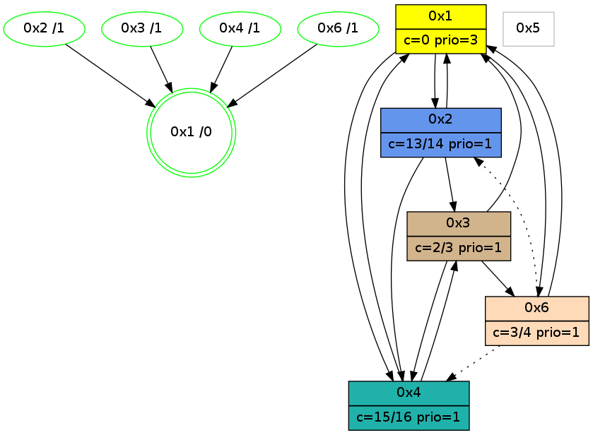

>> << IDX [start] -100 -25 -5 +0 +5 +25 +100 [1120.18789101]
 Previous packets
----------------------------------------------------------------------
1115.266810 beacon01(adaf) #0 coord=01,02,05,03,04,06 cycle=432.0ms assoc
-- color-indic=1 64 f3 7d
1115.276772 beacon02(adaf) #0 coord=01,02,05,03,04,06 cycle=432.0ms assoc 64 a2 82
1115.286771 beacon05(adaf) #0 coord=01,02,05,03,04,06 cycle=432.0ms assoc 64 04 a8
1115.296771 beacon03(adaf) #0 coord=01,02,05,03,04,06 cycle=432.0ms assoc 64 98 8c
1115.306773 beacon04(adaf) #0 coord=01,02,05,03,04,06 cycle=432.0ms assoc 64 3e a6
1115.316772 beacon06(adaf) #0 coord=01,02,05,03,04,06 cycle=432.0ms assoc 64 4a ba
1115.328564 [Hello(3): seq=921 sym=6,1,4 sysInfo=hasWarning stat=6:5,7,9,5/1:7,11,11,1/4:1,4,0,0]
1115.330585 [Hello(1): seq=823 sym=2,4 sysInfo=hasWarning,coloring-mode-on,ColoringModeRequestCalled stat=2:9,1,10,0/4:14,15,11,2]
1115.332794 [Color(6) seq=285 @0:0 color=3/4 prio=1 c=0,2,d;7,c,e,f]
1115.334762 [Color(2) seq=307 @0:0 color=13/14 prio=1 c=0,2,3,7,c,e,f;1,4,6,8,9,b]
1115.342505 [Color(1) seq=349 @0:0 color=0 prio=3 c=c,d,f;3,7,e]
----------------------------------------------------------------------
1115.758918 beacon01(adaf) #0 coord=01,02,05,03,04,06 cycle=432.0ms assoc
-- color-indic=1 64 37 12
1115.768878 beacon02(adaf) #0 coord=01,02,05,03,04,06 cycle=432.0ms assoc 64 66 ed
1115.778879 beacon05(adaf) #0 coord=01,02,05,03,04,06 cycle=432.0ms assoc 64 c0 c7
1115.788879 beacon03(adaf) #0 coord=01,02,05,03,04,06 cycle=432.0ms assoc 64 5c e3
1115.798880 beacon04(adaf) #0 coord=01,02,05,03,04,06 cycle=432.0ms assoc 64 fa c9
1115.808879 beacon06(adaf) #0 coord=01,02,05,03,04,06 cycle=432.0ms assoc 64 8e d5
1115.820624 [Hello(6): seq=836 sym=1,3 asym=4 sysInfo=hasWarning stat=1:5,12,8,0/3:6,15,4,12/4:1,4,0,0]
1115.824330 [Hello(2): seq=1409 sym=3,1,4 sysInfo=hasWarning stat=3:7,3,10,3/1:0,6,13,0/4:1,5,0,0]
1115.826830 PARSE ERROR************************
Traceback (most recent call last):
File "PacketAnalysis.py", line 167, in showOperaPacket
structPacket = OperaPacketParse.parsePacket(rawPacket)
File "../../pkg-python/HipSens/Core/OperaPacketParse.py", line 461, in parsePacket
return parseHelloMessage(data)
File "../../pkg-python/HipSens/Core/OperaPacketParse.py", line 127, in parseHelloMessage
assert struct.calcsize("H")*len(neighAddrList) == len(linkList)
AssertionError
48 18 04 00 03 9b 00 02 02 04 01 00 03 00 53 04 00 02 00 00 4c 04 0f 87 44 0d 4c d2
1115.829729 [Color(4) seq=204 @0:0 color=15/16 prio=1 c=0,3,7,c;1,2,4,6,8,9,b,d,e]
1115.836469 [Color(3) seq=218 @0:0 color=2/3 prio=1 c=0,3,d,f;7,c,e]
----------------------------------------------------------------------
1116.251026 beacon01(adaf) #0 coord=01,02,05,03,04,06 cycle=432.0ms assoc
-- color-indic=1 64 69 73
1116.260986 beacon02(adaf) #0 coord=01,02,05,03,04,06 cycle=432.0ms assoc 64 38 8c
1116.270987 beacon05(adaf) #0 coord=01,02,05,03,04,06 cycle=432.0ms assoc 64 9e a6
1116.280987 beacon03(adaf) #0 coord=01,02,05,03,04,06 cycle=432.0ms assoc 64 02 82
1116.290987 beacon04(adaf) #0 coord=01,02,05,03,04,06 cycle=432.0ms assoc 64 a4 a8
1116.300988 beacon06(adaf) #0 coord=01,02,05,03,04,06 cycle=432.0ms assoc 64 d0 b4
1116.312712 [Hello(3): seq=922 sym=6,1,4 sysInfo=hasWarning stat=6:5,8,9,5/1:8,12,11,1/4:1,4,0,0]
1116.315255 [Color(2) seq=308 @0:0 color=13/14 prio=1 c=0,2,3,7,c,e,f;1,4,6,8,9,b]
1116.317002 [Color(6) seq=286 @0:0 color=3/4 prio=1 c=0,2,d;7,c,e,f]
1116.319374 [STC(1) #0.194 new-neigh,tree-change,inconsistent-stability,stable,to-color d=0]
1116.321963 [Color(1) seq=350 @0:0 color=0 prio=3 c=c,d,f;3,7,e]
----------------------------------------------------------------------
1116.743134 beacon01(adaf) #0 coord=01,02,05,03,04,06 cycle=432.0ms assoc
-- color-indic=1 64 ad 1c
1116.753094 beacon02(adaf) #0 coord=01,02,05,03,04,06 cycle=432.0ms assoc 64 fc e3
1116.763095 beacon05(adaf) #0 coord=01,02,05,03,04,06 cycle=432.0ms assoc 64 5a c9
1116.773094 beacon03(adaf) #0 coord=01,02,05,03,04,06 cycle=432.0ms assoc 64 c6 ed
1116.783095 beacon04(adaf) #0 coord=01,02,05,03,04,06 cycle=432.0ms assoc 64 60 c7
1116.793095 beacon06(adaf) #0 coord=01,02,05,03,04,06 cycle=432.0ms assoc 64 14 db
1116.805093 [Hello(2): seq=1410 sym=3,1,4 sysInfo=hasWarning stat=3:8,4,10,3/1:0,7,14,0/4:2,6,0,0]
1116.807336 [Hello(4): seq=924 sym=1,3 sysInfo=hasWarning stat=1:7,9,0,0/3:14,1,4,4]
1116.809824 [STC(2)->1 #0.194 new-neigh,tree-change,inconsistent-stability,stable,to-color d=1]
1116.811653 [Color(3) seq=219 @0:0 color=2/3 prio=1 c=0,3,d,f;7,c,e]
1116.813728 [STC(6)->1 #0.194 new-neigh,tree-change,inconsistent-stability,stable,to-color d=1]
1116.815629 [STC(4)->1 #0.194 new-neigh,tree-change,inconsistent-stability,stable,to-color d=1]
1116.817912 [Color(4) seq=205 @0:0 color=15/16 prio=1 c=0,3,7,c;1,2,4,6,8,9,b,d,e]
----------------------------------------------------------------------
1117.235242 beacon01(adaf) #0 coord=01,02,05,03,04,06 cycle=432.0ms assoc
-- color-indic=1 64 e1 ac
1117.245203 beacon02(adaf) #0 coord=01,02,05,03,04,06 cycle=432.0ms assoc 64 b0 53
1117.255203 beacon05(adaf) #0 coord=01,02,05,03,04,06 cycle=432.0ms assoc 64 16 79
1117.265204 beacon03(adaf) #0 coord=01,02,05,03,04,06 cycle=432.0ms assoc 64 8a 5d
1117.275203 beacon04(adaf) #0 coord=01,02,05,03,04,06 cycle=432.0ms assoc 64 2c 77
1117.285204 beacon06(adaf) #0 coord=01,02,05,03,04,06 cycle=432.0ms assoc 64 58 6b
1117.296933 [Hello(3): seq=923 sym=6,1,4 sysInfo=hasWarning stat=6:5,9,10,5/1:8,13,12,1/4:1,5,1,0]
1117.299255 [Hello(1): seq=825 sym=2,4,6 sysInfo=hasWarning,coloring-mode-on,ColoringModeRequestCalled stat=2:10,1,11,0/4:15,1,12,2/6:0,0,1,0]
1117.301226 [Color(6) seq=287 @0:0 color=3/4 prio=1 c=0,2,d;7,c,e,f]
1117.303126 [Color(2) seq=309 @0:0 color=13/14 prio=1 c=0,2,3,7,c,e,f;1,4,6,8,9,b]
1117.305595 [Color(1) seq=351 @0:0 color=0 prio=3 c=c,d,f;3,7,e]
----------------------------------------------------------------------
1117.727351 beacon01(adaf) #0 coord=01,02,05,03,04,06 cycle=432.0ms assoc
-- color-indic=1 64 25 c3
1117.737311 beacon02(adaf) #0 coord=01,02,05,03,04,06 cycle=432.0ms assoc 64 74 3c
1117.747312 beacon05(adaf) #0 coord=01,02,05,03,04,06 cycle=432.0ms assoc 64 d2 16
1117.757312 beacon03(adaf) #0 coord=01,02,05,03,04,06 cycle=432.0ms assoc 64 4e 32
1117.767313 beacon04(adaf) #0 coord=01,02,05,03,04,06 cycle=432.0ms assoc 64 e8 18
1117.777313 beacon06(adaf) #0 coord=01,02,05,03,04,06 cycle=432.0ms assoc 64 9c 04
1117.789042 [Hello(2): seq=1411 sym=3,1,4 sysInfo=hasWarning stat=3:9,5,10,3/1:0,8,14,0/4:2,7,1,0]
1117.793530 [Hello(4): seq=925 sym=1,3 sysInfo=hasWarning stat=1:8,10,0,0/3:15,1,4,4]
1117.795343 [Color(3) seq=220 @0:0 color=2/3 prio=1 c=0,3,d,f;7,c,e]
1117.797065 [Color(4) seq=206 @0:0 color=15/16 prio=1 c=0,3,7,c;1,2,4,6,8,9,b,d,e]
----------------------------------------------------------------------
1118.219459 beacon01(adaf) #0 coord=01,02,05,03,04,06 cycle=432.0ms assoc
-- color-indic=1 64 68 c4
1118.229420 beacon02(adaf) #0 coord=01,02,05,03,04,06 cycle=432.0ms assoc 64 39 3b
1118.239420 beacon05(adaf) #0 coord=01,02,05,03,04,06 cycle=432.0ms assoc 64 9f 11
1118.249421 beacon03(adaf) #0 coord=01,02,05,03,04,06 cycle=432.0ms assoc 64 03 35
1118.259420 beacon04(adaf) #0 coord=01,02,05,03,04,06 cycle=432.0ms assoc 64 a5 1f
1118.269421 beacon06(adaf) #0 coord=01,02,05,03,04,06 cycle=432.0ms assoc 64 d1 03
1118.281156 [Hello(3): seq=924 sym=6,1,4 mpr= sysInfo=hasWarning stat=6:5,10,10,5/1:9,14,12,1/4:1,6,1,0]
1118.283687 [Color(2) seq=310 @0:0 color=13/14 prio=1 c=0,2,3,7,c,e,f;1,4,6,8,9,b]
1118.285439 [Color(6) seq=288 @0:0 color=3/4 prio=1 c=0,2,d;7,c,e,f]
1118.287302 [Hello(1): seq=826 sym=2,4,6 sysInfo=hasWarning,coloring-mode-on,ColoringModeRequestCalled stat=2:11,1,11,0/4:0,2,12,2/6:0,0,1,0]
1118.291262 [Color(1) seq=352 @0:0 color=0 prio=3 c=c,d,f;3,7,e]
----------------------------------------------------------------------
1118.711567 beacon01(adaf) #0 coord=01,02,05,03,04,06 cycle=432.0ms assoc
-- color-indic=1 64 ac ab
1118.721528 beacon02(adaf) #0 coord=01,02,05,03,04,06 cycle=432.0ms assoc 64 fd 54
1118.731528 beacon05(adaf) #0 coord=01,02,05,03,04,06 cycle=432.0ms assoc 64 5b 7e
1118.741528 beacon03(adaf) #0 coord=01,02,05,03,04,06 cycle=432.0ms assoc 64 c7 5a
1118.751529 beacon04(adaf) #0 coord=01,02,05,03,04,06 cycle=432.0ms assoc 64 61 70
1118.761528 beacon06(adaf) #0 coord=01,02,05,03,04,06 cycle=432.0ms assoc 64 15 6c
1118.772915 [STC(1) #0.195 new-neigh,tree-change,inconsistent-stability,stable,to-color d=0]
1118.775008 [Hello(4): seq=926 sym=1,3 sysInfo=hasWarning stat=1:9,11,0,0/3:0,1,4,4]
1118.776921 [Hello(2): seq=1412 sym=3,1,4 sysInfo=hasWarning stat=3:10,6,10,3/1:1,9,14,0/4:3,8,1,0]
1118.779647 [Color(4) seq=207 @0:0 color=15/16 prio=1 c=0,3,7,c;1,2,4,6,8,9,b,d,e]
----------------------------------------------------------------------
1119.203675 beacon01(adaf) #0 coord=01,02,05,03,04,06 cycle=432.0ms assoc
-- color-indic=1 64 e0 1b
1119.213637 beacon02(adaf) #0 coord=01,02,05,03,04,06 cycle=432.0ms assoc 64 b1 e4
1119.223638 beacon05(adaf) #0 coord=01,02,05,03,04,06 cycle=432.0ms assoc 64 17 ce
1119.233636 beacon03(adaf) #0 coord=01,02,05,03,04,06 cycle=432.0ms assoc 64 8b ea
1119.243636 beacon04(adaf) #0 coord=01,02,05,03,04,06 cycle=432.0ms assoc 64 2d c0
1119.253639 beacon06(adaf) #0 coord=01,02,05,03,04,06 cycle=432.0ms assoc 64 59 dc
1119.265229 [STC(4)->1 #0.195 new-neigh,tree-change,inconsistent-stability,stable,to-color d=1]
1119.267312 [Color(2) seq=311 @0:0 color=13/14 prio=1 c=0,2,3,7,c,e,f;1,4,6,8,9,b]
1119.268911 [Hello(1): seq=827 sym=2,4,6 sysInfo=hasWarning,coloring-mode-on,ColoringModeRequestCalled stat=2:12,1,11,0/4:1,3,12,2/6:0,0,1,0]
1119.271019 [Hello(3): seq=925 sym=6,1,4 sysInfo=hasWarning stat=6:6,11,10,5/1:10,15,13,1/4:1,7,1,0]
1119.274053 [STC(3)->1 #0.195 new-neigh,tree-change,inconsistent-stability,stable,to-color d=1]
1119.280956 [Color(6) seq=289 @0:0 color=3/4 prio=1 c=0,2,d;7,c,e,f]
1119.288026 [Color(1) seq=353 @0:0 color=0 prio=3 c=c,d,f;3,7,e]
----------------------------------------------------------------------
1119.695783 beacon01(adaf) #0 coord=01,02,05,03,04,06 cycle=432.0ms assoc
-- color-indic=1 64 24 74
1119.705744 beacon02(adaf) #0 coord=01,02,05,03,04,06 cycle=432.0ms assoc 64 75 8b
1119.715743 beacon05(adaf) #0 coord=01,02,05,03,04,06 cycle=432.0ms assoc 64 d3 a1
1119.725743 beacon03(adaf) #0 coord=01,02,05,03,04,06 cycle=432.0ms assoc 64 4f 85
1119.735744 beacon04(adaf) #0 coord=01,02,05,03,04,06 cycle=432.0ms assoc 64 e9 af
1119.745746 beacon06(adaf) #0 coord=01,02,05,03,04,06 cycle=432.0ms assoc 64 9d b3
1119.757492 [Hello(2): seq=1413 sym=3,1,4 sysInfo=hasWarning stat=3:11,6,11,3/1:2,10,14,0/4:3,9,2,0]
1119.761203 [Hello(6): seq=840 sym=1 asym=4,2 sysInfo=hasWarning stat=1:6,0,9,0/4:3,8,1,0/2:0,1,0,0]
1119.763692 [Hello(4): seq=927 sym=1,3 sysInfo=hasWarning stat=1:10,12,1,0/3:1,1,5,4]
1119.766591 [Color(4) seq=208 @0:0 color=15/16 prio=1 c=0,3,7,c;1,2,4,6,8,9,b,d,e]
1119.773332 [Color(3) seq=222 @0:0 color=2/3 prio=1 c=0,3,d,f;7,c,e]